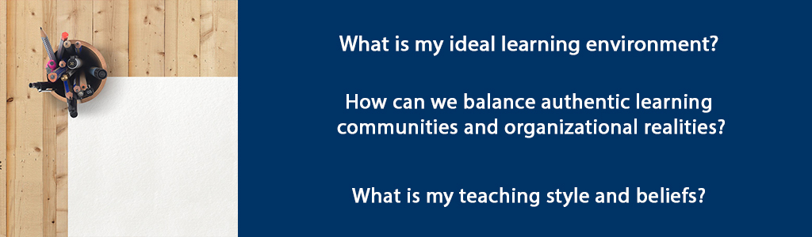

Overview
In this culminating unit you will bring together what you have learned about creating authentic learning communities for adult learners. Throughout the course you have explored theoretical foundations of learning communities, evaluated strategies for creating authentic learning communities, and how to apply those strategies in a learning/coaching context. In addition, you have explored teaching and learning through the lens of personal transformation and considered challenges of leading for an authentic learning environment. The themes you read and discussed included identity, perception, interconnectedness, humility and learning organizations.
Now it is time to develop a personal philosophy of Learning Communities, exploring what it means to be personally authentic and how to lead authentically in a learning environment. Your main task will be to consider two subtopics and write a platform paper that will synthesize your learning about teaching, learning and context as well as administrative and supervisory aspects of the role of adult educator. As an adult educator you have the opportunity to be a transformational leader. The development of a platform of beliefs will provide substantive proof of your readiness to serve in this capacity as well as increase your confidence and sense of self-efficacy.
Unit 10 focuses on three guiding questions:
- What is my ideal learning environment?
- How can we balance authentic learning communities and organizational realities?
- What is my teaching style and beliefs?
Topics
- Teaching, Learning and Context
- Administrative and Supervisory Aspects of an Adult Educator
Unit Learning Outcomes
When you have completed this unit you should be able to:
- Describe your ideal adult learning environment.
- Describe the supervisory and/or administrative aspects for which adult educators are accountable.
- Create a platform of beliefs regarding adult learning for a specific context/organization.
Learning Activities
Here is a checklist of learning activities you will benefit from in completing this unit. You may find it helpful in planning your work.
10.1 Teaching, Learning and Context
What is your ideal learning environment? You can learn a lot about your own teaching style from the way you like to be taught. Thinking about teachers you’ve liked will also give you clues to the sorts of things that are important to you, such as using critical thinking, humour, precise details, or visual reinforcement in the lesson. These are practical aspects of the role that you need to consider in addition to the methods and strategies you have been reading about in the course and in other certificate courses.
It is important to keep in mind that your personal likes and style will not be the same as your learners so you need to be flexible enough to build in variety. Generally, the more collective and participatory the methods, the more effective and engaging the class experience will be.
10.1.1 Activity: Sticky Note Challenge!
10.1.2 Activity: Learning Styles Video
10.2 Administrative and Supervisory Aspects of an Adult Educator
Teaching a group of learners also involves non-instructional duties. Sometimes there is a tension between our philosophical beliefs about authentic teaching and learning and the organizational realities we face. In addition to creating authentic learning experiences, your teaching responsibilities will often require you to track and report on learners’ progress, submit grades or summary reports to the organization, order textbooks or supplies, work with an assistant such as a learning coach or teacher assistant, book classrooms…. The possibilities are many!
Beyond your own classroom, you may be asked to contribute to committees and other meetings about the operational aspects of the education facility. Few educators work alone. We are almost all part of an organizational context which has implications for our work. Organizations have expectations and the relationship between the adult educator and the organization is important to consider. Sometimes what is asked of us organizationally conflicts with our philosophy of how to carry out assessment or what it means to advise and guide students on their educational journey. The time invested in meetings is important for the organization to flourish and enable the teaching and learning to happen at all yet, this time commitment can detract from planning authentic learning experiences and having the time to give extensive formative feedback. Every organization is driven by a set of values which will apply to the educational environment. If there is an outside funder for example, then reports to demonstrate progress and results will need great care and handling since this is what makes programs possible at all. Educators must not only promote what they consider the best way to do things but also take into account what others expect and need from the program.
During this course you have focused on how to develop authentic learning communities. Authentic learning communities take place within organizational contexts. Priorities between these two – developing authentic learning communities and organizational realities are not always aligned. However, it behooves the critical thinker to figure out how to align them as much as possible. This is a challenge worth embracing in order to be personally and professionally fulfilled.
No matter how hopeful our dialogue has been, no matter how many of our colleagues have embraced a new vision, no matter how many practical possibilities we have explored, someone will say, ‘These are wonderful ideas, but every last one of them will be defeated by conditions in my school’ (Palmer, 2017, p. 170).
Palmer (2017) suggests that change begins when we, as individual teachers and facilitators, “make an inward decision to live ‘divided no more,’ finding a center for their lives outside of institutions” and “begin to discover one another and form communities of congruence that offer mutual support and opportunities to develop a shared vision” (pp. 172-3).
10.2.1 Activity: Closing Song
Summary
In this unit, you have had the opportunity to discern your teaching style and beliefs as well as consider certain pragmatic aspects of the role. Through writing the platform paper you had the opportunity to think critically about what you’ve learned in this course about authentic learning communities, your personal and professional identity. Teaching and coaching adults is not easy – challenges and indeed failures are to be expected no matter how much experience you have. But it is a very rewarding vocation if you put in the thought, time and talent into good content, design and facilitation.
In the role of adult educator, you have the opportunity to change lives and cultivate growth of the mind and spirit. May the work you undertake grow within you a greatness of vision, stir your spirit so that you can see and love the common good more, and create an environment where all whom you serve can thrive.
Assessment
Please submit your assignments in the appropriate dropbox in Moodle. See the Assessment section for the Grading Criteria that explains how your assignments will be evaluated.